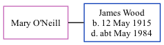

Mary Catherine Wood (née O'Neill)
[ Home ] | [ Calendar ] | [ Surnames Index ] | [ Family History ]Mary O'neill and married James Wood (a bricklayer) in Tynemouth, Tyne and Wear, England around Aug 19451.
Citations
- England & Wales Marriages 1837-2005 - Findmypast
Media
England & Wales marriages 1837-2005 - BMD/M/1945/3/AZ/001241/011
Family Tree
Generated by ged2site. Last updated on Nov 13, 2024